Microsoft
As of 2016, bus boarding has seen an increase of 4.6 percent across the region of Vancouver, with South of Fraser seeing the largest increase for about, 3.7 million (10%) of any sub region of the lower mainland. The busiest bus line being the 99B line which connects UBC to Commercial-Broadway station which has more than 17 million annual boarding that contributes to over 33% of the time being over crowded. With the population on the rise and a steady economy, transit has become the pinnacle method of transportation for a large part of the citizens in Vancouver.
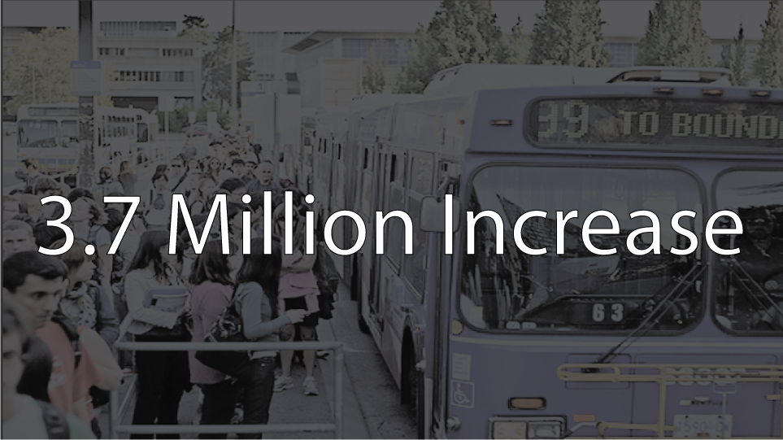In trying to find a way to potentially change commuter’s travel behaviours or help make their commute smoother, TransLink and Microsoft has teamed up in an ambitious partnership project to design an application that could utilize historical data on bus crowdedness and combine with machine learning to help create a better experience for commuters in an ever growing city.
**To comply with my non-disclosure agreement, I have omitted confidential information. All information in this report reflects on my own work and not necessarily TransLink and Microsoft.**
TransLink has an existing web application which pulls their data from an open source API but due to the lack of focus of what the web application should provide for the users, the application encounters constant usability challenges. For example, It would require the users multiple taps to find their next bus or in-put for travel destination.
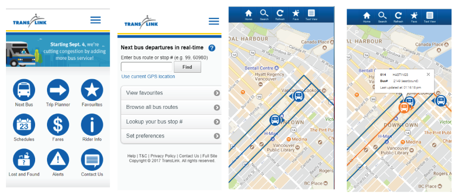One of the core challenges of this application requires us to communicate historical data in a timely manner while keeping the data short and concise so that the users would be able to understand the information provided, our team decided it’s best to conduct a competitive analysis in order to understand why certain transportation application is more popular when compared to other apps in the market.
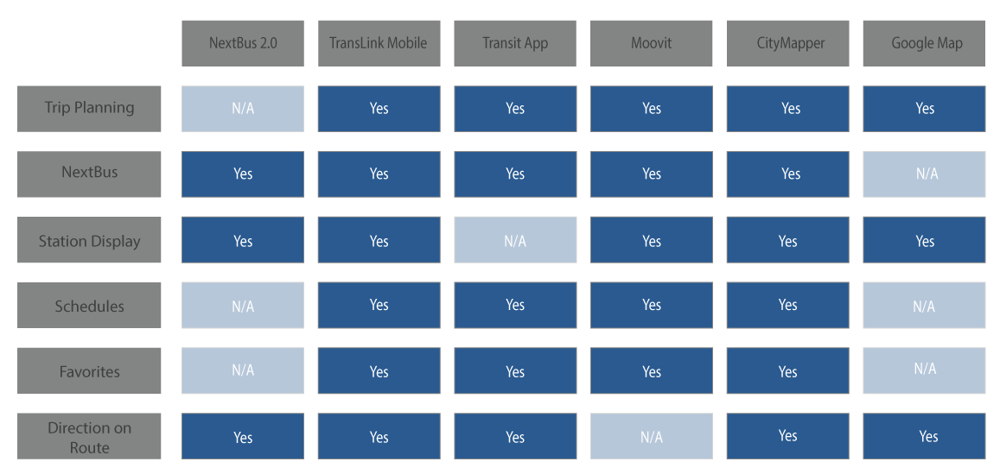While my team of developers were busy working on the stories for the backend and various API integration as well as setting up Azure subscriptions, I took the time to conduct competitive analysis on the other applications in the market. Our team consists of 5 develops and 1 designer (myself) and during our brainstorming phase, I brought together the team and wanted to get everyone’s input on the application because I believe everyone has the ability to “design think”, by brainstorming together.
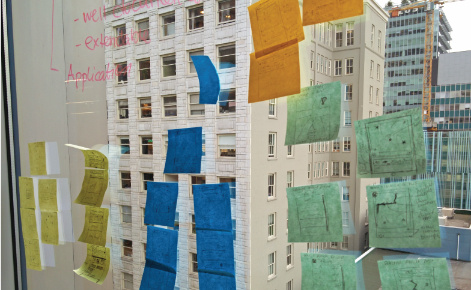 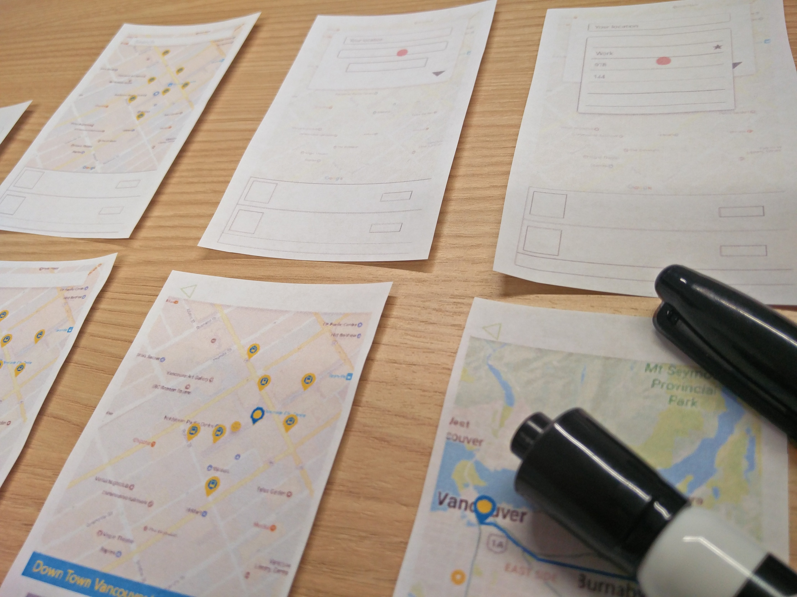My goal as a designer was to create an application that is universal and as a part of Microsoft’s Inclusive design guidelines, the application should try to include every possible users or has the potential of including users that maybe considered physically challenged during a given situation. The original premise of the application was simple, to recreate a mobile version of the web application. However, the app’s purpose isn’t to reinvent the past but to shape the future. Our goal was to incorporate machine learning and historical data into the application so that users could ultimately have more control over their commute.
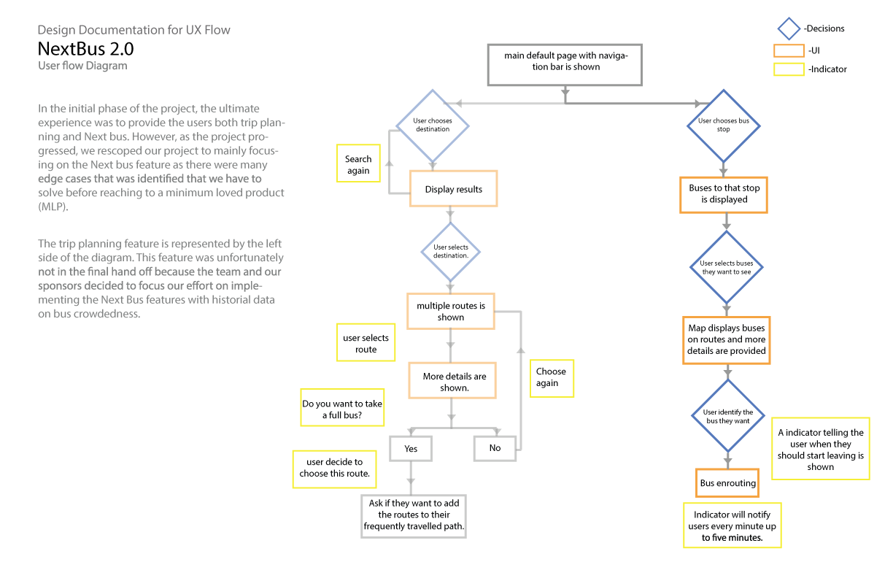Our goals at a high level were to:
- 1. Create a mobile version of the web application with primary features such as trip planning, next bus, and favourites.
- 2. Integrate historical data on bus crowdedness and utilize machine learning to create an application that could potentially change travel behaviours.
- 3. Provide users the ability to send feedback about pass ups.
I was the lead designer for this partnership project, representing Microsoft and working closely with the marketing and management team from TransLink. In addition, I worked alongside with our product manager, researcher, content strategists, and my team of developers.
The story board we created was based on personas that we found through research with the help from TransLink.
"Historical data and real time data causes conflicts"
Through multiple usability testing sessions, we found that users had trouble identifying what was historical data and what was real time data. The user felt that, rather than tapping through a list of data, and digesting all the information themselves, they would want the application to simplify the data sets so that they will understand what it meant with a glance.
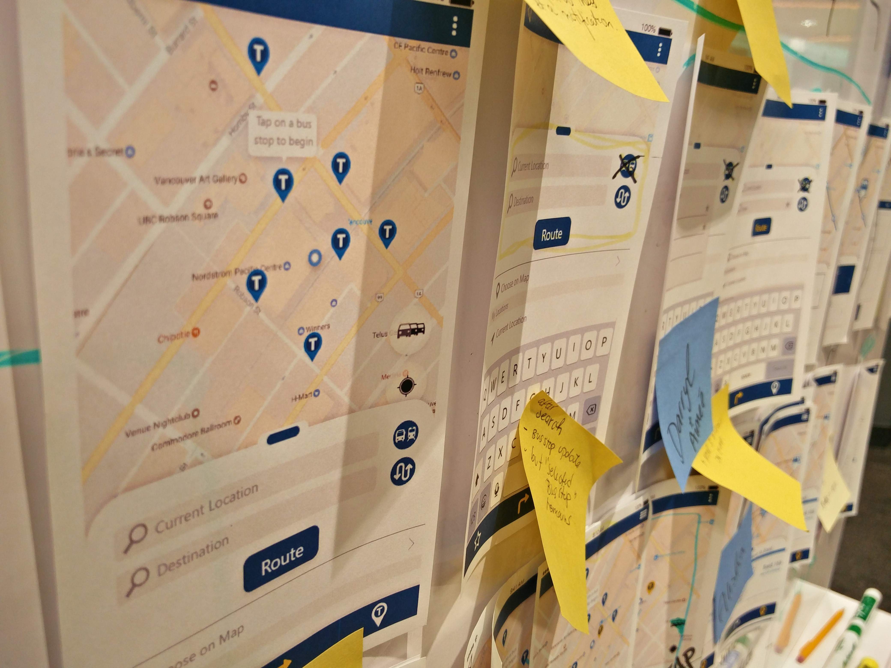“I want to open the app and with a tap or tap, being able to identify when my bus is coming and how crowded is the current selected bus-it shouldn’t take more than 10 seconds to figure it out.”
We concluded that simple and straight forward interactions with the ability to communicate information directly to the user throw a glance was ultimately what would provide value to our user base. However, the ultimate challenge was being able to convey information (seven years of historical data) in a form that is easy to understand with a quick glance.
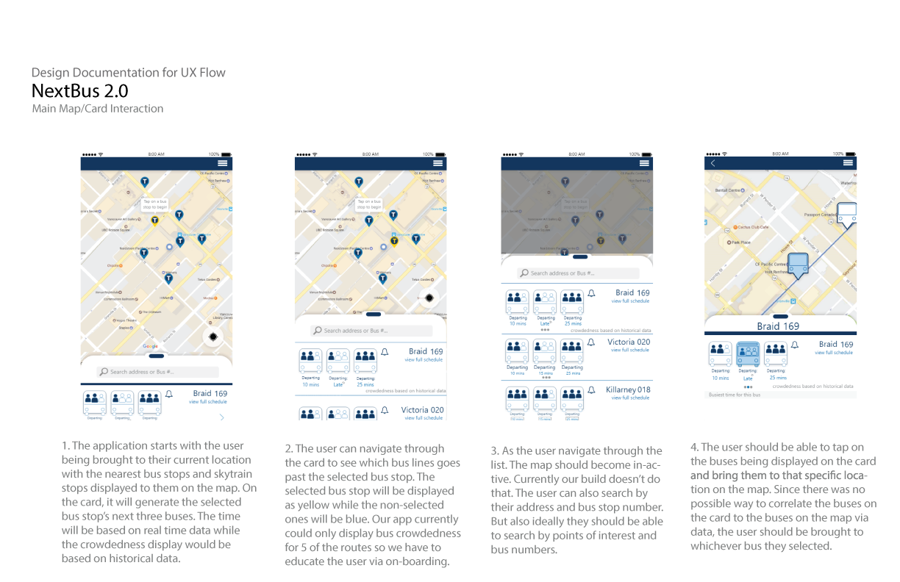Before I could jump into designing, it was important to further research on iconography and symbols as they are the fundamental of annotation which conveys multiple meanings with a simple representation. I tested over 50 ways of conveying data information, staying away from colors and tried using different concepts such as a meter, battery life; to ultimately realising we need to represent using the human symbol as it conveys crowdedness in the simplest form.
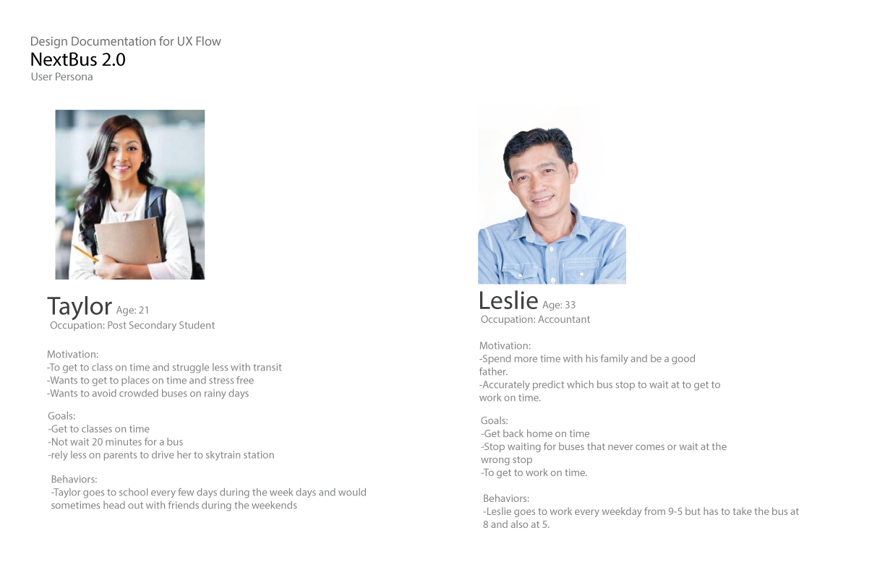 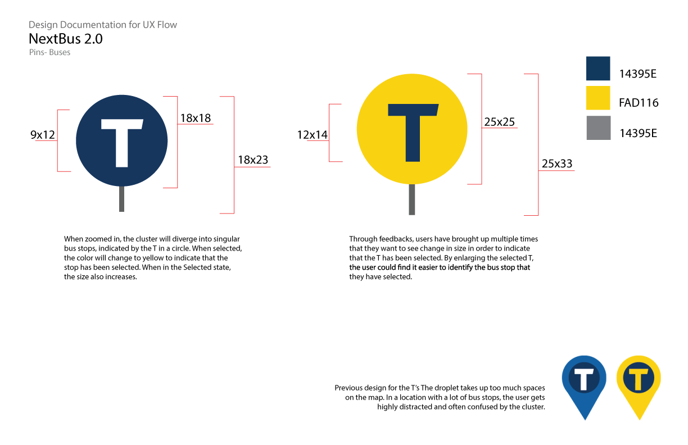 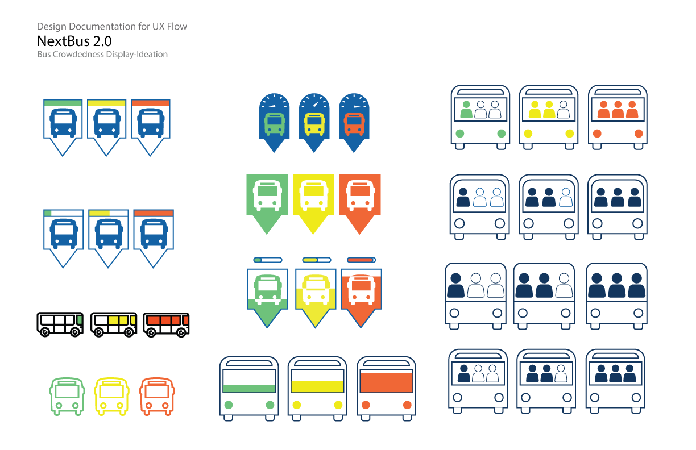While everything was going smoothly after figuring out what could be used to best convey bus crowdedness, the development side encountered a few issues. There were two APIs which could be used to pull information but due to the limited time on the project the team wouldn’t be able to gathered both sets of API and could only choose one. The problem didn’t stopped there, half way into the project once the machine learning aspect of the project has been integrated into the application, our team came to a realization that with the chosen API, there was no way of correlating bus crowdedness indicated on the slider card with the buses displayed on the map.
The original design was displaying crowdedness information and time of departure on the card while associated the selected bus shown on the map. I partnered with our data scientist to try multiple methods of correlating the displayed information but because one API pulls information from the stop and another for historical crowdedness data, the correlation was lost.
With time being a necessity that we don’t have, our team decided to focus on the Next Bus feature for the application in order to spend time figuring out how to better correlate the data set. But we continue to develop the wireframe for the trip planning features for potential pass-off to TransLink. 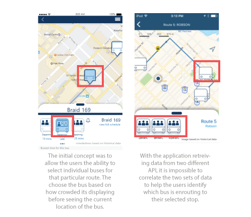
We revisited some other applications to see how they display information and when we live in an age where everything demands your time, we should represent the information with time and crowdedness being the primary axis. This notion helped us re-think our data model as well as how we should represent the crowdedness for a specific bus route.
As we went back to the drawing board, it has become clear to us that representing data by individual buses is not the right direction since crowdedness derives from a set schedule that the users trying to fulfill and buses within a certain time frame would not fluctuate. With that notion, it make sense to create a graphical pattern for the users to identify the current time and how busy this particular bus line could potentially become.
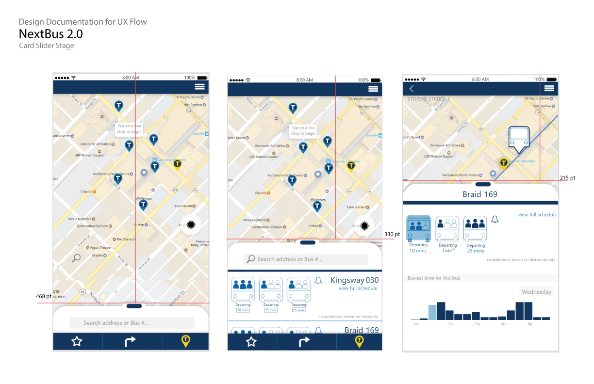Due to the time limit we had for this project, we were only able to successfully implement the first two goals which was to create a mobile version for the Next Bus feature and incorporate machine learning for crowdedness based on historical data into the application. Currently the application is in beta testing under Apple Test Flight with five of the major routes in Vancouver being incorporated into the machine learning data collection for bus crowdedness.
"This application will become the foundation for any future projects for TransLink's release. The machine learning will help give TransLink at least two years head start for our project"
For more information about the application please feel free to contact me. If you want to be a tester and wish to try out the application please send me an email at lukpeter82@gmail.com.